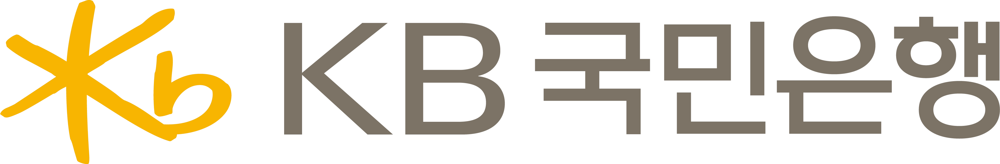

희망2027나눔캠페인 성금 전달식 나눔이벤트 연출 시안 도미노 · 1안 실물 + LED / 2안 LED 단독 | 2026. 09
1안 · 2안
선택 요청
연출은 같습니다. 갈리는 것은 시작점 하나입니다
두 안 모두 「도미노 → 중앙 오브제 → 마을 밝아짐 → 로고 등장」을 그대로 탑니다. 대표자가 무엇을 쓰러뜨리는가에서만 갈립니다.
1안
실물 도미노 + LED
실물 → 화면이음매

- 무대 바닥에 실물 도미노가 서고, 대표자가 그것을 민다.
- 실물이 멈추는 지점에서 화면 속 도미노가 그대로 이어받는다.
- 크기는 성인 남성 기준 가슴과 배꼽 사이 — 허리를 숙이지 않고 미는 높이.
이 안의 성패는 이음매 하나입니다. 실물이 쓰러진 자리와 화면이 받는 자리가
어긋나면 두 개가 따로 놉니다. 제작 · 운송 · 설치 · 리허설이 붙습니다.
2안
LED 단독
화면 안에서시작
- 무대에 실물이 없다. 대표자가 화면 앞 지정 자리에서 미는 동작을 한다.
- 첫 도미노가 화면 안에서 넘어가며 바로 마을 길로 이어진다.
- 제작물이 없으므로 기업이 바뀌어도 그대로 재사용된다.
한 시스템 안에서 끝납니다. 센서 판정과 화면이 같은 PC 위에 있어
현장에서 어긋날 지점이 적고, 리허설도 화면만 맞추면 됩니다.
※ 실물 도미노 제작은 사랑의열매 측에서 외부 디자인 의뢰로 진행하시는 것으로 협의되었습니다. 이 시안이 그 디자인의 기준이 됩니다.
중앙 오브제
선택 요청
온도가 차오르는 가운데의 무엇
올해 온도탑은 10월 중후반에 나오므로 그 실물에 맞추지 않습니다. 해마다 조형이 바뀌어도 그대로 쓸 수 있도록 기호만 남긴 두 가지를 준비했습니다.
두 안의 공통점
그 해 조형(굴뚝 · 나무 · 마을)에 기대지 않습니다. 다음 해에도 같은 씬을 그대로 씁니다 — 로고를 연출에서 빼는 것과 같은 이유입니다.
※ 고르신 쪽이 그대로 확정 요소가 됩니다. 10월 중후반에 실제 온도탑이 나와도 이 시안은 흔들리지 않습니다.
로고 · 재사용
기업이 바뀌어도 그대로
로고는 마지막에, 좌 · 우로 등장합니다
쓰러지는 것에는 로고를 넣지 않습니다. 연출이 끝나고 마을이 밝아진 뒤에 뜨기 때문에, 기업이 바뀌어도 영상을 새로 뽑지 않습니다.
도입좌 · 우에 플로팅떠 있는 정도. 등장 연출이 아니다
연출 중로고 없음도미노 · 마을 · 오브제만
마을이 밝아진 뒤좌 후원사 · 우 사랑의열매등장 애니메이션

CMS 에서 배경이 빠진 PNG 한 장을 올리면, 미리 만들어 둔 등장 이펙트에 맞춰 어떤 비율의 로고든 같은 자리에 들어갑니다. 담당자가 하는 일은 그것뿐입니다.
※ 로고 종횡비가 기업마다 다르므로(예: KB국민은행 국문 lockup 은 가로로 매우 깁니다) 어떤 비율이든 받아 내는 세이프박스로 설계합니다.
기술 · 운영
키넥트 단독 · 추가 장비 없음
센서 하나로, 한 번만 판정합니다
CUT 01 · 도미노 판정
판정 순간 · CUT 01
키넥트는 사람의 손이나 제스처를 읽지 않습니다. 화면 앞 지정 구간에 도미노가 있다가 사라졌는지만 봅니다. 사람이 아니라 물체의 유무를 보는 판정이라 조명 · 의상 · 주변 인원에 흔들리지 않고, 실패할 절벽이 없습니다.
그 뒤 · CUT 02 ~ 05
한 번 걸리면 끝까지 판정 없이 흐릅니다. 지난 안은 진입 · 이탈 두 번을 봤고 그만큼 어긋날 지점도 둘이었지만, 이번에는 하나입니다. 두 분이 자리를 옮기거나 다른 인원이 함께 서 있어도 화면은 되돌아가지 않습니다.
※ 인식이 흔들릴 경우 담당자가 타이밍에 맞춰 수동으로 넘기는 방식을 최후 방책으로 둡니다 — 기존 운영과 같은 방식이라 현장에서 새로 익힐 것이 없습니다. 판정 확정은 현장 시뮬레이션을 여러 번 거칩니다.
표지
/ 11